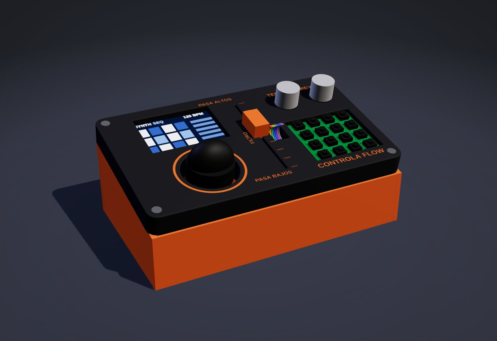
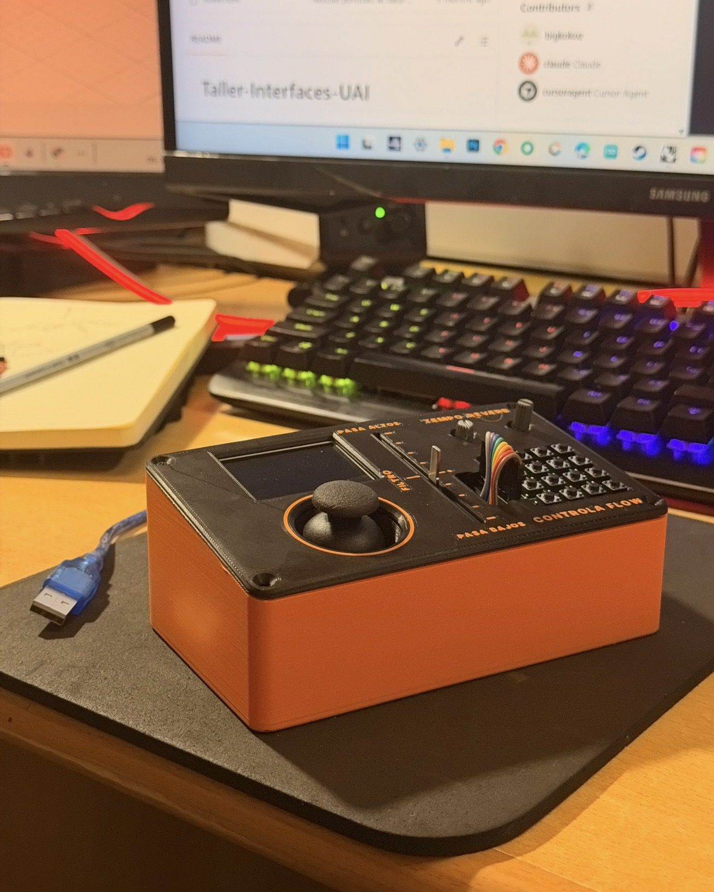
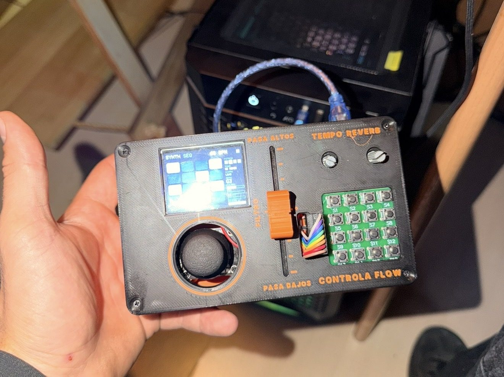
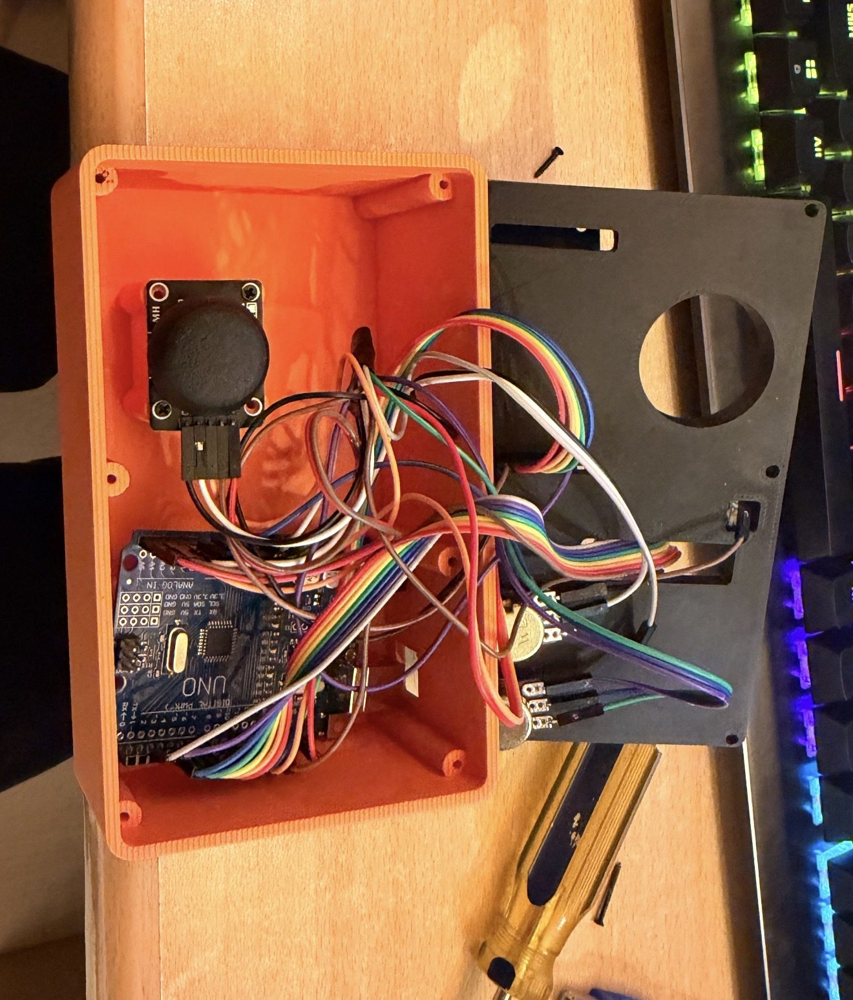
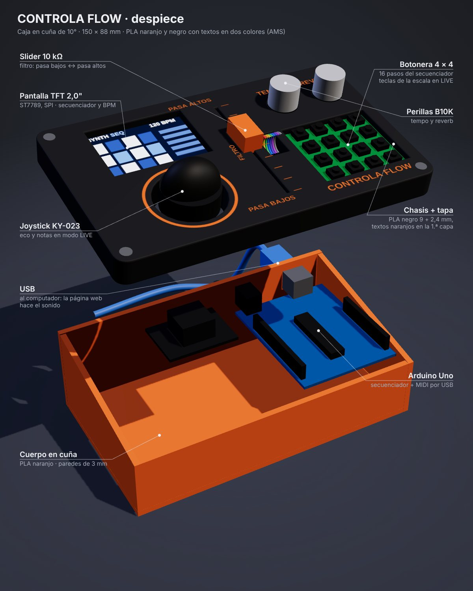
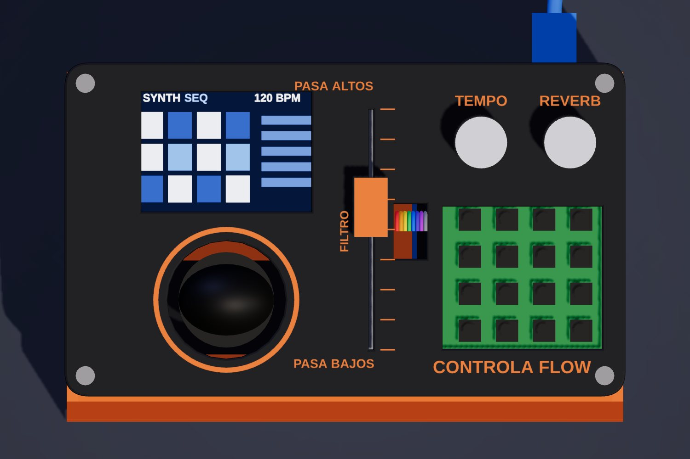
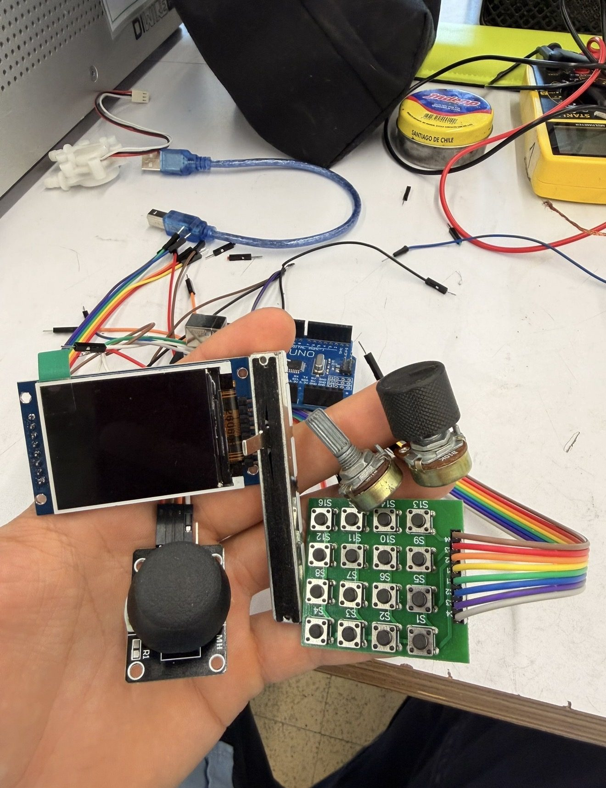
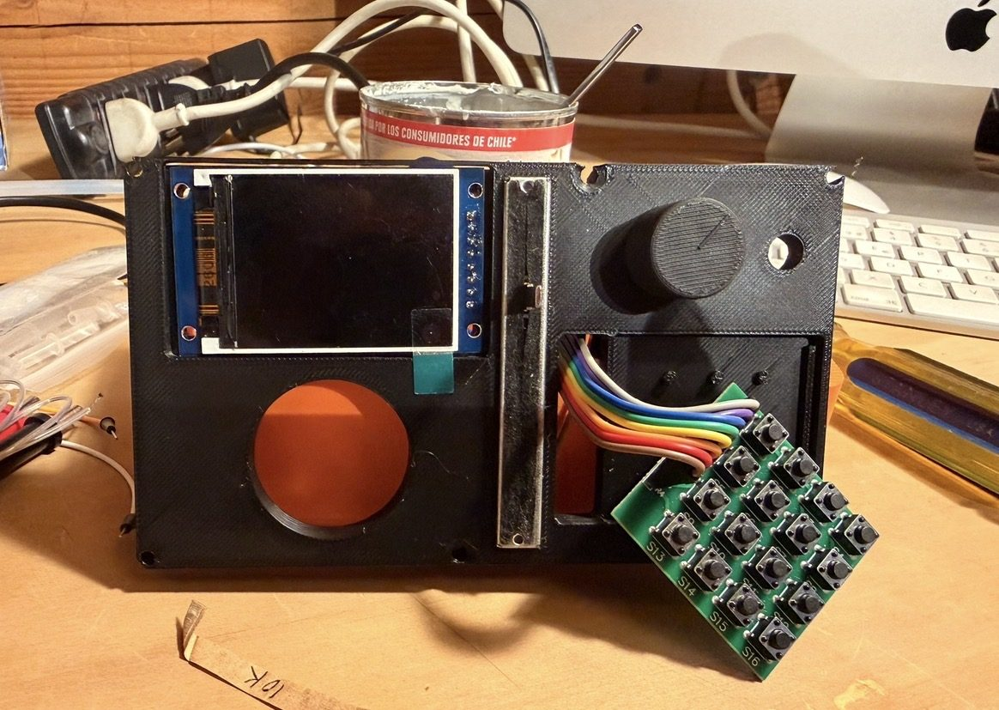

Taller de Interfaces · UAI · 2026
CONTROLA FLOW
Una groovebox hecha en casa: un Arduino Uno con pantalla, botonera, joystick, slider y dos perillas, dentro de una caja impresa en 3D. Se conecta por USB y una página web genera el sonido.
El proyecto fue destacado y felicitado en la presentación del curso.




Cómo funciona
El Arduino toca, la página suena
El Arduino lee los controles, dibuja el secuenciador en la pantalla y manda mensajes por USB a 115 200 baud. Una página web los recibe con Web Serial y genera los sonidos con Web Audio, así que funciona en cualquier computador sin instalar nada.



Proceso
Medir, modelar, imprimir y corregir
La caja se diseñó alrededor de las medidas reales de cada componente y se corrigió después de cada impresión.
Cada componente medido a mano
Pantalla de 62 × 37 mm, botonera de 43,5 × 39 mm con 10 mm entre botones, joystick de 34 × 25,5 mm, slider de 74,85 mm con 64 mm de recorrido y perillas con rosca de 5,5 mm.
Cuña de 10° hacia el usuario
El panel se inclina para que la pantalla y los controles queden de frente. Mide 43 mm de alto adelante y 58 mm atrás, con el USB del Arduino saliendo por la parte trasera.
Caja paramétrica en tres capas
Cuerpo, chasis de 9 mm donde se montan los componentes y tapa de 2,4 mm. Un script en CadQuery genera las piezas: al cambiar una medida, todo se regenera.

Lo que enseñó la primera impresión
El jack de alimentación chocaba con un pilar, la pantalla quedaba suelta y el panel necesitaba apoyo bajo la botonera. Los pilares se colgaron de la pared con una rampa de 45°, se ajustó el marco de la pantalla y se agregó un canal de 31 mm para los cables de las perillas.
Textos en dos colores
TEMPO, REVERB, FILTRO, PASA ALTOS, PASA BAJOS y CONTROLA FLOW van embutidos en naranjo en la cara negra, impresos en la misma pieza con la AMS de la Bambu Lab X1C.
Controles
Qué hace cada cosa
| Control | Componente | Función |
|---|---|---|
| Botonera 4 × 4 | Matriz de 16 pulsadores | Modo SEQ: prende y apaga los 16 pasos de la pista. Modo LIVE: 16 notas de la escala. |
| Pantalla | TFT 2,0" ST7789 (SPI) | Muestra la pista, los pasos, el instrumento y el BPM. |
| Joystick | KY-023 | Cambia la nota de un paso, controla el eco y, con el clic, play y cambio de modo. |
| Slider | Potenciómetro lineal 10 kΩ | Filtro tipo DJ: centro neutro, abajo graves, arriba agudos. |
| Perilla TEMPO | Potenciómetro B10K | Velocidad de 60 a 187 BPM. |
| Perilla REVERB | Potenciómetro B10K | Cantidad de reverberación. |
Conexiones
20 pines del Uno en uso
D0 y D1 quedan libres para el USB. Todos los 5 V y GND van a un riel común.
| Arduino | Va a | Arduino | Va a |
|---|---|---|---|
| D2 – D5 | Botonera C4, C3, C2, C1 | A0 | Slider (cursor) |
| D6 – D8 | Botonera R1, R2, R3 | A1 / A2 | Perillas tempo y reverb |
| D12 | Botonera R4 | A3 / A4 | Joystick X / Y |
| D9 / D10 | Pantalla DC / CS | A5 | Clic del joystick |
| D11 / D13 | Pantalla SDA / SCL | RESET | RST de la pantalla |
| 3.3V | VCC y BL de la pantalla | 5V / GND | Riel común |
Usarla
Conectar la caja y tocar
- Conecta la caja al computador con el cable USB.
- Abre la app en Google Chrome o Microsoft Edge (Safari y Firefox no pueden hablar con el Arduino).
- Aprieta Probar sonido para revisar los parlantes.
- Aprieta Conectar Arduino y elige el puerto (en Windows aparece como COM3, COM4… o USB-SERIAL CH340). No toques el joystick mientras se conecta: se calibra en ese momento.
- Listo: el beat parte solo y la página muestra todos los controles.
Si no aparece ningún puerto: prueba otro cable USB (algunos solo cargan), instala el driver CH340 y cierra el Arduino IDE. Si se corta el sonido, recarga la página y vuelve a conectar.
Abrir la app